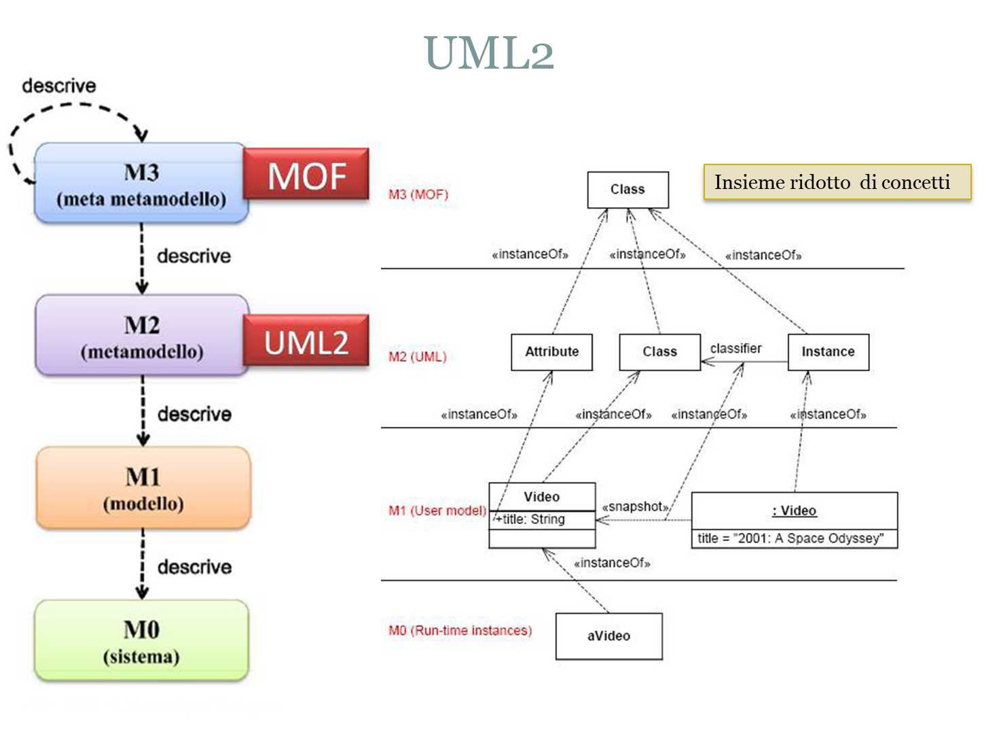

LabIss | Agile model-based software development
QActors and process development
QActor models should be introduced in the early stages of the software development process, to express in a concise way the overall architecture of a distributed system composed of a set of actors that useThe intent is to exploit the features of the QActor language to capture the
The possibility to execute a (simple) QActor model of a system as the result of the problem analysis phase can be very useful for a more productive interaction with the customer in order to better understand the requirements, define the product backlog and introduce proper functional test-plans already expressed as programs.
Logical architectures
Moreover, a system analyst could exploit the QActor modeling language to define aClearly, such a simple initial architectural model must be refined in the next steps of process development (mainly in the project phase) by gradually
The concepts embedded into the QActor language can express (running) models of software system bot at the 'macro' level (of a distributed, heterogeneous system) and at the 'micro' level (of each node composing the system) in a 'seamless' way.
The mapping between the logical level and the appropriate interaction-technology support(s) identified by the designer, can be done in a quite automated way by a proper software factory built around the QActor concepts, as formally defined in the
Models and meta-models
MetamodelingThe Object Management Group (OMG) has developed a metamodeling architecture to define the UML, called theThe most prominent example of a Layer 2 MOF model is the UML metamodel, which describes the UML itself. The UML language can be extended using a mechanism called stereotyping, but this has been criticized as being insufficient/untenable. |
 |
Model Driven Software Development |
 |
EMF and XtextXtext is a framework for development of programming languages and domain-specific languages. Xtext uses EMF models as the in-memory representation of any parsed text files. This in-memory object graph is called the abstract syntax tree (AST). Depending on the community this concepts is also called document object model ( With Xtext you define your language using a powerful grammar language. As a result you get a full infrastructure, including parser, linker, typechecker, compiler as well as editing support for Eclipse. |
The Eclipse Modeling Framework |
Definition of a custom language: example
grammar it.unibo.xtext.intro19.Iot
with org.eclipse.xtext.common.Terminals
generate iot "http://www.unibo.it/xtext/intro19/Iot"
terminal VARID : ('A'..'Z'|'_ ('a'..'z'|'A'..'Z'|'_'|'0'..'9')*;
IotSystem: "
|

|
Domain Specific Languages
A Domain-specific languages (DSL) is a computer language specialized to a particular application domain. Examples of DSL are Gradle and SQL. This is in contrast to a general-purpose programming language (GPL), which is broadly applicable across domains.DSL are specialized in solving a specific problem domain and can be very efficient at it. Moreover, by
DSLs come in two main forms: external and internal.
External DSLs are DSLs with their own syntax that's parsed independently of the host GPL. They requires work when integrating to an application written with a general programming language.Internal DSLs are written in the syntax of a general programming language. They are a particular form of API in a host general purpose language, often referred to as a fluent interface .
|
For an example using Kotlin to define internal DSL see
LabDsl.html.
 |